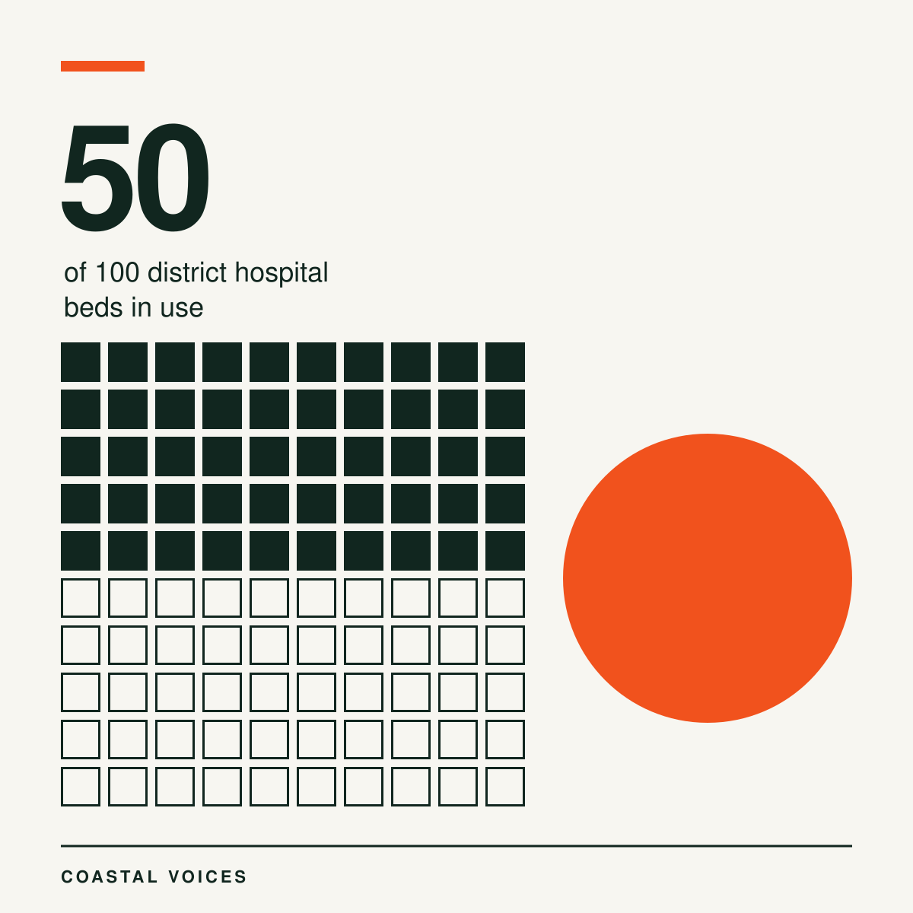
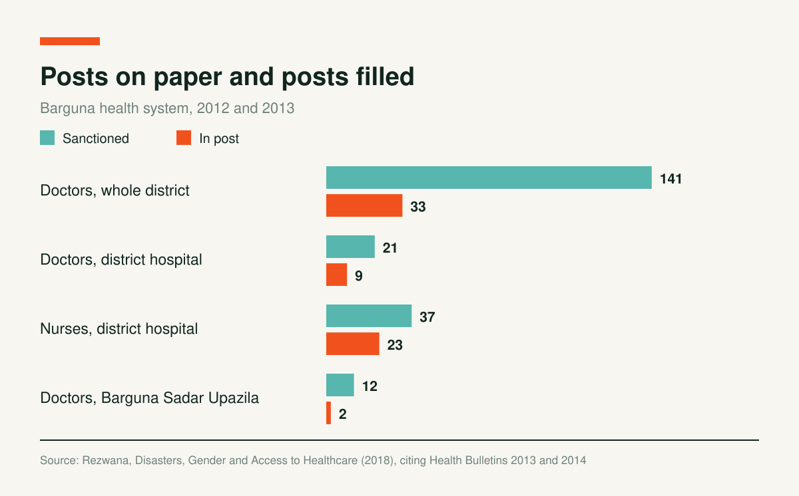
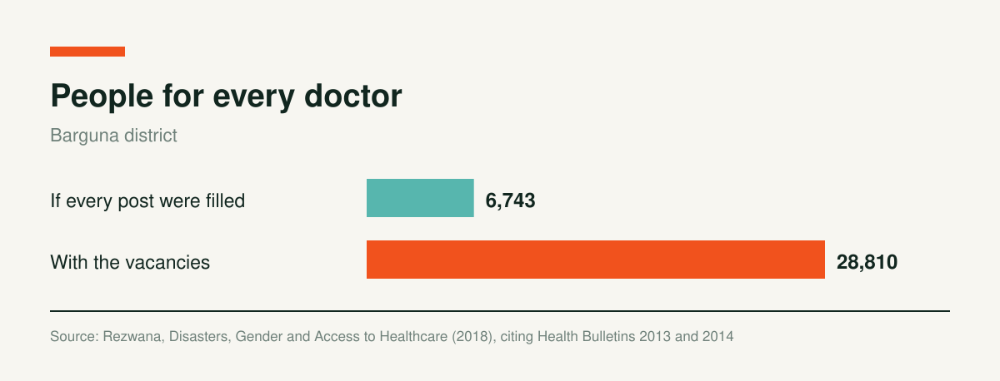

Barguna's District Hospital Has 100 Beds. Fifty Work.
When Cyclone Sidr hit in November 2007, Barguna district lost 1,335 people, about 40% of the national toll. It also lost 60 to 70% of its crops, and 95,412 houses were damaged in full or in part. In 2013, Cyclone Mahasen affected 60,000 people in the district and destroyed 6,856 houses.
Nahid Rezwana asked a different question: when a cyclone injures and sickens people, who can they reach for care? She did fieldwork in Barguna municipality and in Tentulbaria village in Barguna Sadar Upazila, and studied the health system around them.

The Hospital on Paper and in Practice
Barguna has 141 sanctioned doctor posts. On paper, that means one doctor for 6,743 people. With vacancies, the ratio is one doctor for 28,810. A local health authority's bulletin counted 33 doctors in post.


The 100 bed district hospital in Barguna municipality had only 50 beds in use in 2012. It had nine doctors against 21 sanctioned posts, no female doctor, and 23 nurses against 37 posts. Rezwana puts the district's bed supply at 100 beds for 261,363 people. That year the hospital recorded 89,284 outpatient visits, 3,859 emergency visits and 12,463 admissions.
The wider system includes one district hospital, four Upazila Health Complexes and 108 community clinics. Private care is limited: about 23 clinics with 30 beds in total. Rezwana writes that private care offers better facilities and common treatment to richer people, who can travel to other districts, while the poor depend on the government sector.
A Village with No Clinic
Tentulbaria village has no health centre and no pharmacy. The government's immunisation programme visits the primary school from time to time. Villagers buy common medicines from pharmacies in nearby villages and go to centres in Barguna Sadar Upazila for treatment.
That upazila has 12 sanctioned doctor posts. In 2013, only two were filled. For emergencies and serious illness, villagers travel to Barguna municipality.
Gender Decides Who Gets Care
Rezwana's final chapter names gender as the most significant factor in how disasters shape health and access to care. It asks whether the district was ready for Mahasen six years after Sidr, and closes with recommendations for gender sensitive disaster management plans.